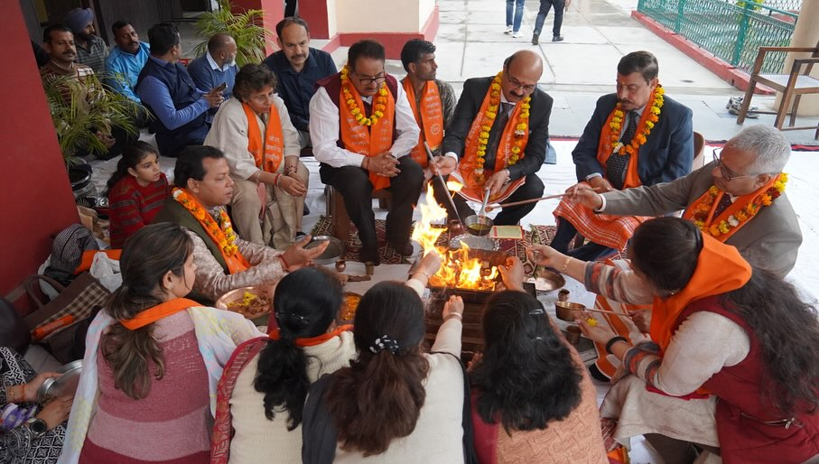
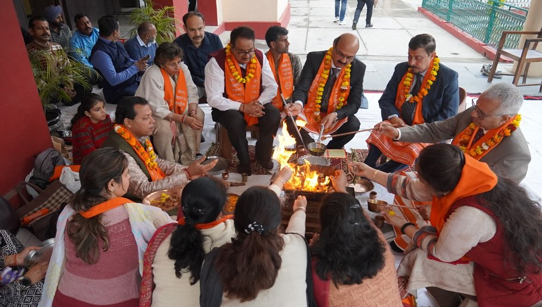

Workshops
A workshop in colleges is a short-term, interactive session designed to teach students practical skills, enhance their knowledge, or engage them in hands-on learning experiences. Workshops can be conducted by professors, industry experts, or guest speakers and usually focus on specific topics related to academics, career development, or personal growth.